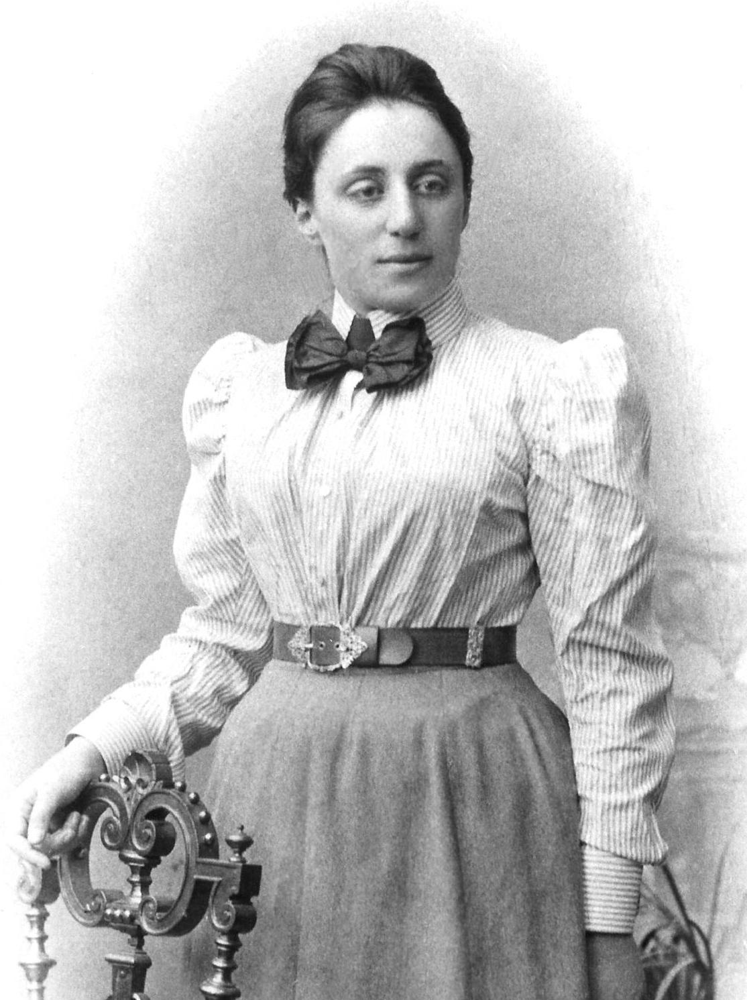
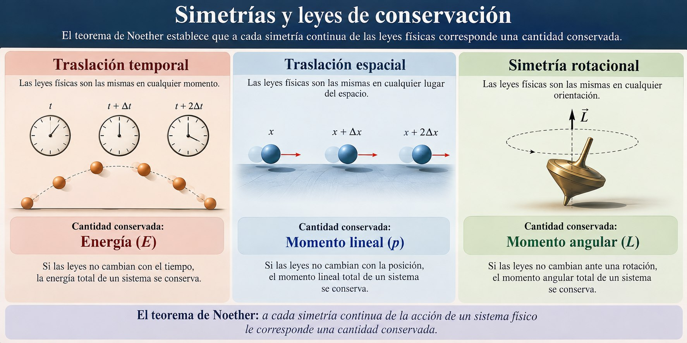

Por qué la energía se conserva, de dónde vienen el momento lineal y angular, y cómo una matemática marginada descubrió el principio más profundo de toda la física
En 1915, mientras los mejores físicos del mundo — incluyendo al propio Einstein — debatían si la nueva teoría de la relatividad general violaba o no la conservación de la energía, una matemática que no tenía permitido cobrar sueldo en la Universidad de Göttingen empezó a trabajar en el problema, y en 1918 publicó el trabajo que hoy lleva su nombre. Emmy Noether no se limitó a responder la pregunta sobre la energía: demostró que todas las leyes de conservación conocidas — energía, momento lineal, momento angular, carga eléctrica — no son reglas independientes dictadas arbitrariamente por la naturaleza. Son consecuencias inevitables de algo más profundo y más bello: la simetría del universo. El Teorema de Noether es quizás el resultado más fundamental de toda la física teórica, y sin embargo es desconocido para la mayoría de las personas.
Emmy Noether (1882–1935) estudió matemáticas en una época en que las mujeres no podían matricularse oficialmente en las universidades alemanas. Asistió como oyente, obtuvo su doctorado en 1907, y pasó años trabajando sin remuneración porque su género le impedía ocupar posiciones académicas formales. Cuando Hilbert y Klein la invitaron a Göttingen, otros profesores protestaron: "¿Qué pensarán nuestros soldados cuando vuelvan de la guerra y tengan que aprender a los pies de una mujer?" Según se cuenta, Hilbert respondió con una frase que se volvió célebre: "No veo por qué el sexo de la candidata es un argumento en contra de su admisión. Al fin y al cabo, esto es una universidad, no un baño público." Einstein la calificó como el genio matemático más significativo producido desde que la enseñanza superior se abrió a las mujeres.

En física y matemática, una simetría es una transformación que deja el sistema invariante: algo que podemos cambiar sin que el resultado del experimento cambie. Si realizas un experimento hoy y lo repetís mañana en el mismo laboratorio, obtenés el mismo resultado: eso es simetría de traslación temporal (las leyes no dependen del instante en que se aplican). Si trasladás tu laboratorio 100 km al norte y repetís el experimento, el resultado es el mismo: eso es simetría de traslación espacial. Si lo rotás 90°, el resultado sigue siendo el mismo: simetría rotacional.
El tren y el laboratorio: Imaginá que hacés caer una pelota dentro de un tren en movimiento uniforme. La pelota cae verticalmente respecto a vos: no "sabe" que el tren se mueve. Si hacés el mismo experimento en un tren en Tokio, en Buenos Aires o en la Luna (ajustando la gravedad), las leyes son las mismas. Esa independencia del lugar y del momento es lo que Noether formalizó como simetría de traslación espacial y temporal. Y de esa simetría emergen, inevitablemente, la conservación del momento lineal y de la energía respectivamente.
La clave del teorema es que estas simetrías no son cualquier tipo de simetría: son simetrías continuas, es decir, transformaciones que pueden aplicarse en cantidades arbitrariamente pequeñas (trasladar el laboratorio 1 mm, 0.1 mm, 0.001 mm...). A cada simetría continua de este tipo le corresponde exactamente una ley de conservación. La correspondencia es biunívoca y exacta.

El teorema opera en el formalismo lagrangiano de la mecánica. El Lagrangiano \( \mathcal{L} \) de un sistema es una función que encapsula toda la dinámica del sistema: depende de las coordenadas generalizadas \( q_i \), sus velocidades \( \dot{q}_i \) y el tiempo. La acción \( S \) es la integral del Lagrangiano en el tiempo, y el principio de mínima acción establece que la trayectoria física es aquella que hace estacionaria a \( S \).
El Teorema de Noether establece: si la acción \( S \) es invariante ante una transformación continua parametrizada por \( \varepsilon \), entonces existe una cantidad conservada \( J \) a lo largo de las trayectorias físicas.
Noether en el Modelo Estándar: El Modelo Estándar se construye exigiendo que la teoría sea invariante ante simetrías locales (de gauge): SU(3) para la interacción fuerte y SU(2) × U(1) para la electrodébil, que contiene al electromagnetismo. Cada partícula mediadora (gluones, bosones W y Z, fotón) es la consecuencia matemática de exigir esa invariancia local. Esa parte ya no es el primer teorema de Noether, que trata simetrías globales: es el llamado principio de gauge, vinculado con el segundo teorema del mismo trabajo de 1918. Lo que sí sale del primer teorema es la conservación de la carga eléctrica, a partir de la parte global de la simetría U(1) del electromagnetismo.
El reverso del teorema es igualmente revelador: cuando una simetría se rompe explícitamente —porque las propias ecuaciones dejan de respetarla—, la cantidad correspondiente deja de conservarse. Distinta es la ruptura espontánea de simetría: las ecuaciones siguen siendo simétricas, pero el estado de mínima energía no lo es. Es el mecanismo por el cual partículas que deberían ser sin masa adquieren masa (mecanismo de Higgs), y es central para entender por qué la fuerza débil tiene rango corto mientras el electromagnetismo tiene rango infinito. En cosmología se piensa que, al enfriarse el universo en sus primeros instantes, la simetría electrodébil dejó de manifestarse y las interacciones débil y electromagnética se separaron. Que antes se hayan roto otras simetrías, como proponen las teorías de gran unificación, es todavía una hipótesis.
Si el universo tuviera perfecta simetría CP (conjugación de carga + paridad), habría exactamente la misma cantidad de materia que de antimateria, se aniquilarían mutuamente y no quedaría nada. El hecho de que existamos implica que esa simetría está ligeramente rota. La violación CP fue observada experimentalmente en 1964 en el sistema de kaones neutros (Nobel 1980). Cuantificar exactamente cuánta violación CP existe y por qué es suficiente para explicar la asimetría bariónica del universo es uno de los problemas abiertos más importantes de la física de partículas. Como CP es una simetría discreta y no continua, esta cuestión queda fuera del alcance del Teorema de Noether, que trata simetrías continuas.
El Teorema de Noether transformó la física de un catálogo de leyes empíricas en una ciencia deductiva: si conocemos las simetrías del sistema, podemos derivar sus leyes de conservación sin medición alguna. Más aún, al buscar nuevas simetrías podemos predecir nuevas leyes y nuevas partículas antes de observarlas. Es el resultado matemático más profundo que conecta la geometría abstracta con la física medible, y fue demostrado por alguien a quien el sistema académico de su época trató de ignorar sistemáticamente. Que el teorema más fundamental de la física lleve su nombre es una forma de justicia póstuma perfectamente simétrica.
Pregunta para la comunidad: El Teorema de Noether conecta simetría con conservación. Si el Big Bang rompió simetrías originales del universo, eso implica que en los primeros instantes existían leyes de conservación que hoy no tenemos. ¿Podrían existir simetrías ocultas que aún no detectamos y que explicarían la materia oscura o la energía oscura como cantidades conservadas de esas simetrías? ¿Cómo buscarías evidencia experimental de una simetría que nunca has visto?